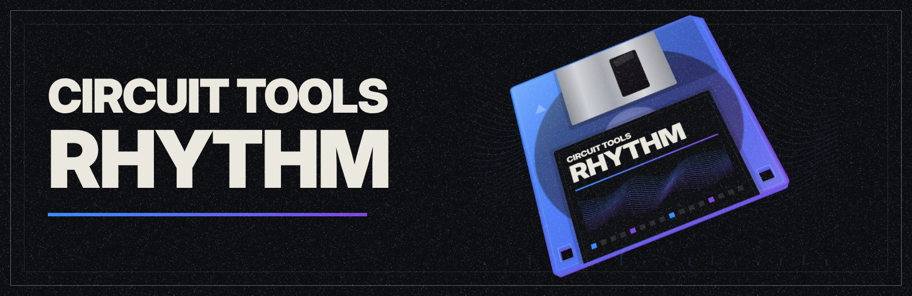

Circuit Rhythm
Sample Library
/ Pack Builder
Sort your samples while you listen, shape them for the Rhythm and build packs for Components or the microSD card.
- Every sample explained: its category and why
- A break becomes a kit: hits, shortened loops, slices
- Mono that repairs, your file kept in stereo
- Packs that fit 128 pads and 228 seconds